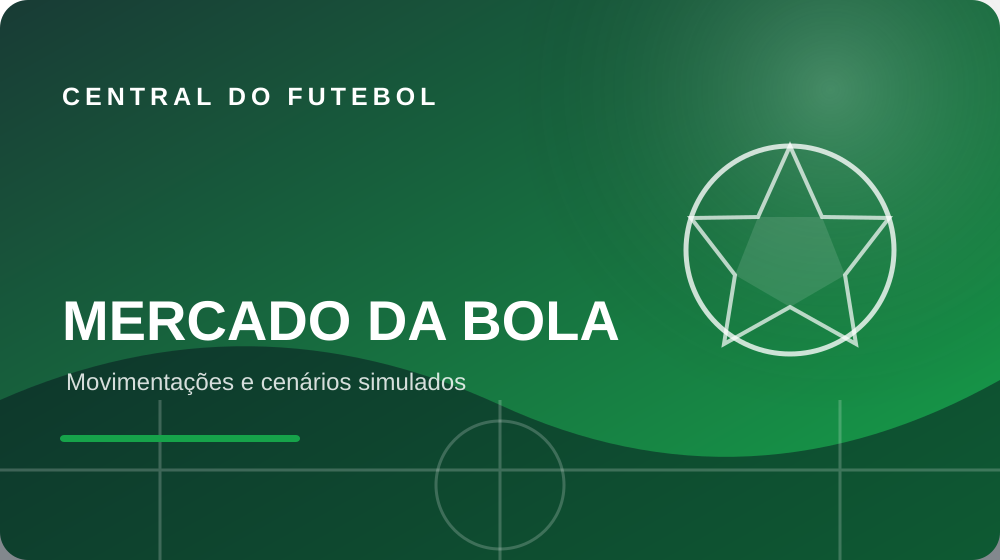

CENTRAL DO FUTEBOL • ESPECIAL
O futebol não para.
A notícia também não.
Notícias, mercado da bola, jogos, estatísticas e histórias que movimentam o esporte mais amado do planeta.
Portal demonstrativo. Informações simuladas estão sinalizadas.
90'+
O QUE ESTÁ EM DESTAQUE
Manchetes do momento
MERCADO DA BOLA
Negócios que mexem com o imaginário

SIMULAÇÃO FICTÍCIA
E se Messi voltasse ao Barcelona?
Um cenário hipotético para discutir impacto esportivo, financeiro e emocional de uma transferência que faria o mundo do futebol parar.
Explorar mercado da bolaGIRO DE JOGOS
Placar e próximos confrontos
Os placares e horários exibidos nesta demonstração são dados fictícios, criados exclusivamente para fins acadêmicos.